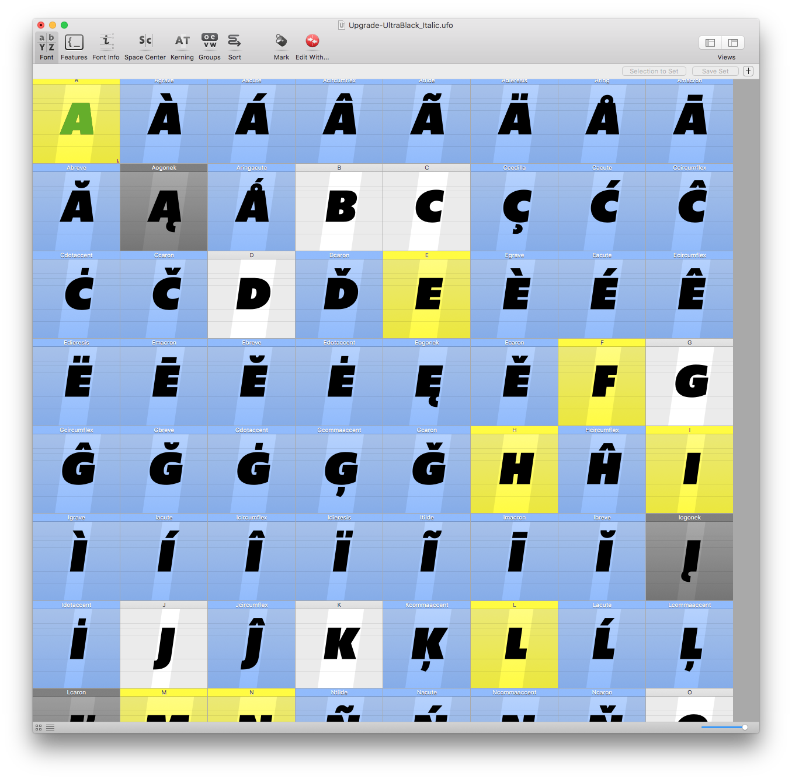
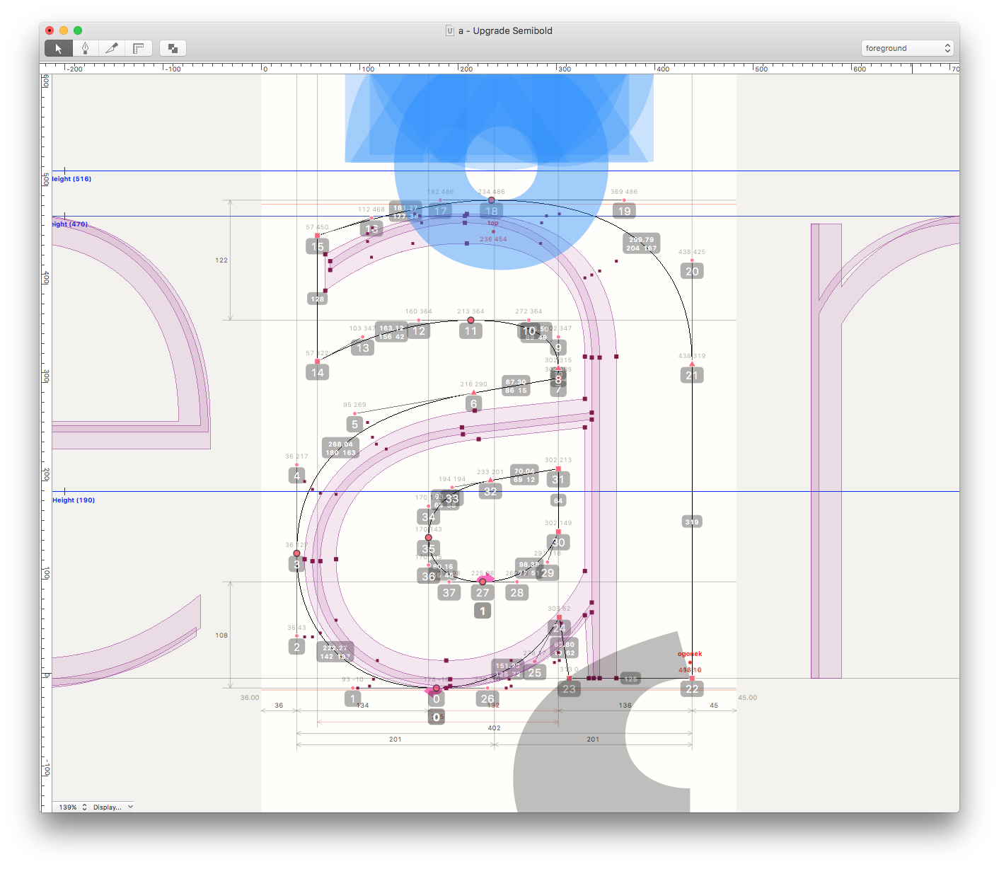

The making of Upgrade
TYPETR Upgrade is made with RoboFont, the type design tool developed by Frederik Berlaen. The application is entirely written in Python, which allows designer to “hack in” at any level of their tools.
RoboFont is build on top of a number of other code libraries, such as Tal Leming’s Vanilla and Defcon, Just van Rossum’s FontTools (now fully supported and maintained by Google), Adobe’s FDK and Erik can Blokland’s “MutatorMath”, to name a few.
The community of professional type designers is relatively small, and the tasks are so divers, that any comparison to applications like PhotoShop and InDesign fails. Type designers for the large part need to create their own tools, to support the design and production of their typefaces. Any existing pre-canned solution is likely to be used by graphic designers too. They don’t need type designers for that.
Scripting
The same applies to the development of TYPETR Upgrade. Where almost all design and production work was done with Robofont, still over 50 different scripts were used to accomplish specific tasks, such as auto-creation of characters, testing tension in curvature, testing symmetric spacing, testing compatibility of similar shapes, creating proof specimens, automatic kerning where possible, interpolation and conversion to various output formats.
The main reason for developing scripts during the design process, is to create short production cycles to test final result in any stage of the process.
Wrong guesses can otherwise eat up a lot of valuable time.
The FontWindow in RoboFont gives an overview of the complete glyph set. In this case the Upgrade Semibold.
Zooming the FontWindow reveals more details about layering and spacing of the glyphs, still as an overview. Here the Upgrade UltraBlack Italic is shown.
The main EditWindow in RoboFont looks like this. A single letter (Semibold glyph) is shown as outline, with markers on the position of the points drawn by the designer.
Also visible in this window is the addition of a set of Type Network tools that draw the blue accent cloud, the analyzed metrics of the drawing and some other weights (Hairline and Light) in the background as comparison.